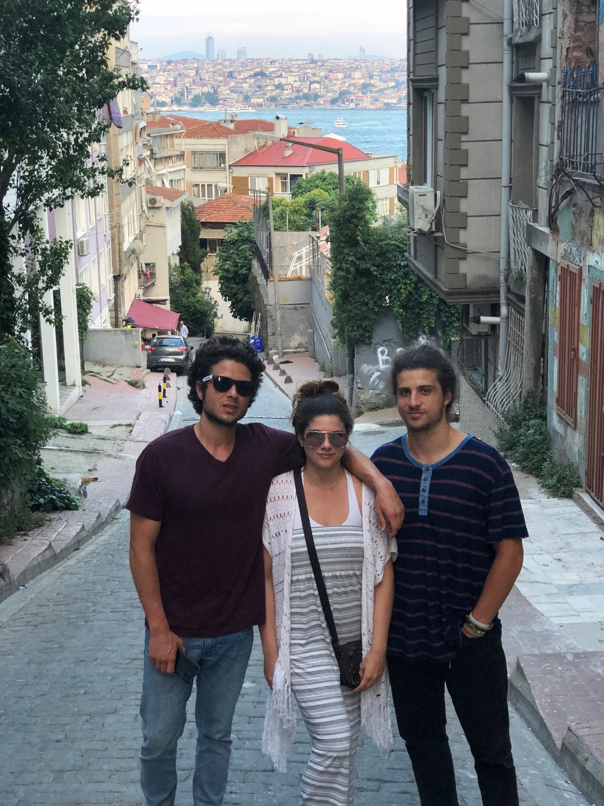

About Me
I am originally from the Sacramento area and work as a consultant in the energy field. As a consultant I help clients participate in California's wholesale electricity market. We advise clients who own generators about how to participate in the markets as well as utilities who have to serve their customers.
Prior to my current role, I attended the University of Colorado Boulder and have a BS in Economics. I am interested in coding because I think the skillset will make my job more efficient. I handle an enormous amount of data every day, and having the ability to code will automate some processes. I am interested especially in learning backend languages. In any case, I think coding is a good skill to have in today's world.
In my free time I enjoy travelling, snowboarding, running, and kayaking. I try to travel a few places a year. Most recently I went to Instanbul for the first time and found the city really amazing.